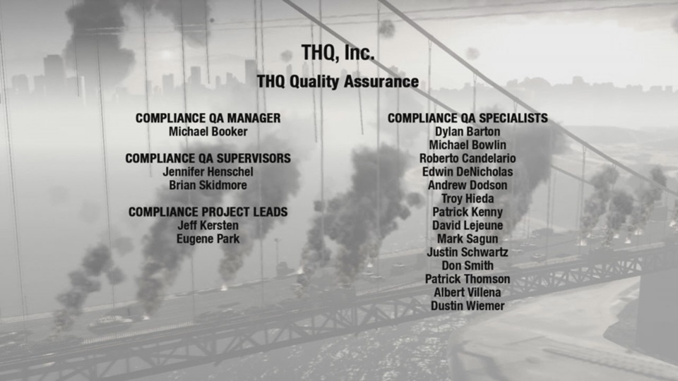
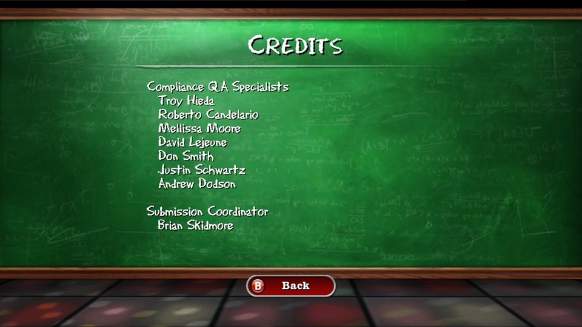
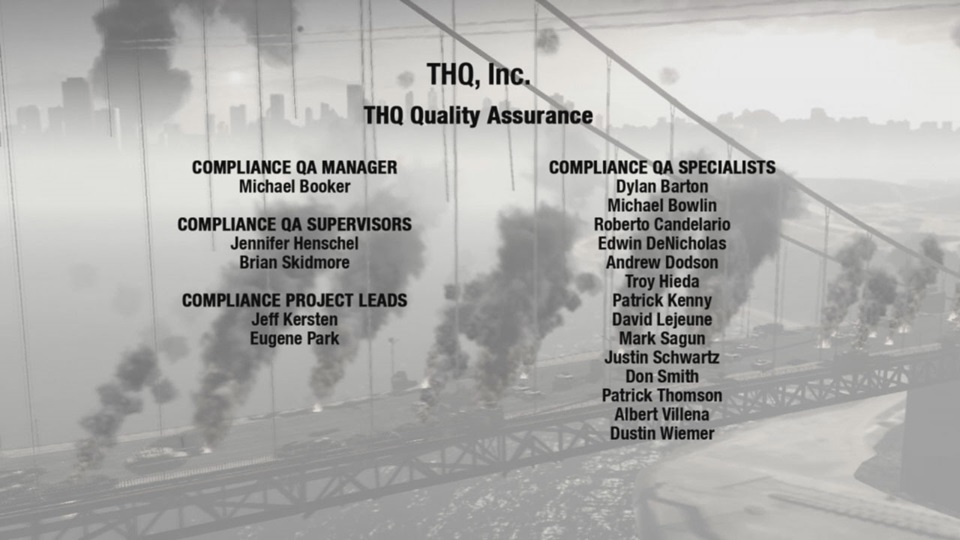
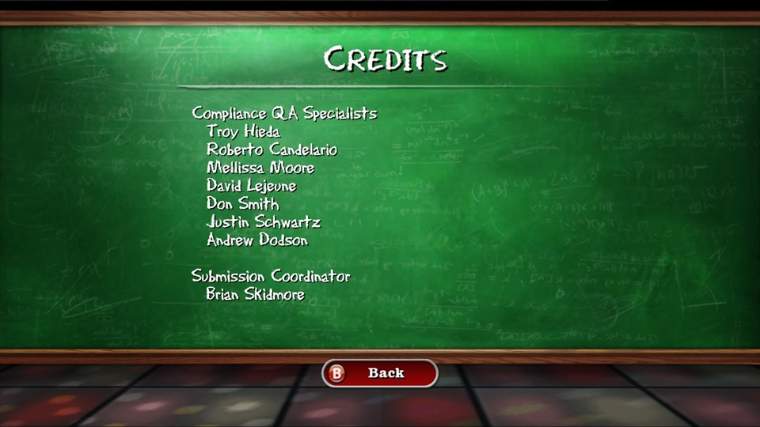

Quality Assurance
My time working in the quality assurance department at THQ included a wide varity of testing methodologies on a varity of platforms. Each platform had its own unique set of challenges that became more complex as the platforms had a greater online component. It was common to encounter an issue that would need to be fixed differently across multiple platforms.
Testing
- Develop custom test plans outlining scope and objectives to ensure complete testing coverage.
- Work with multiple teams to cross check if issues are platform exclusive.
- Write detailed bug report on every unique issue encountered.
- Re-test issues to narrow down specific triggers.
- Run regression testing on previously reported issues to verify if they have been fixed.
- Work with teams to run network tests.
- Run complex network tests while operating mutiple devices
- Work with localization specialists to ensure non-English text and audio are translated correctly.
- Setup soak tests to run overnight to ensure software stability
Compliance Testing
- Incorporate many of the same testing methodologies of standard testing.
- Focus on platform specific specifications detailed in the Technical Certification Requirements.
Certification
- Work with project managers to submit game concept details for initial approval from Sony and Microsoft.
- Collect and organize all project details, documentation, files, and other submission materials.
- Track down any missing details, documentation, files, required for submission.
- Provide regalar updates to all stakeholders regarding outstanding issues preventing submission.
- Coordinate with multiple contacts to evaluate submission status.
- Send out a company wide notification email adhering to strict formatting requirements when submission is complete.
 


